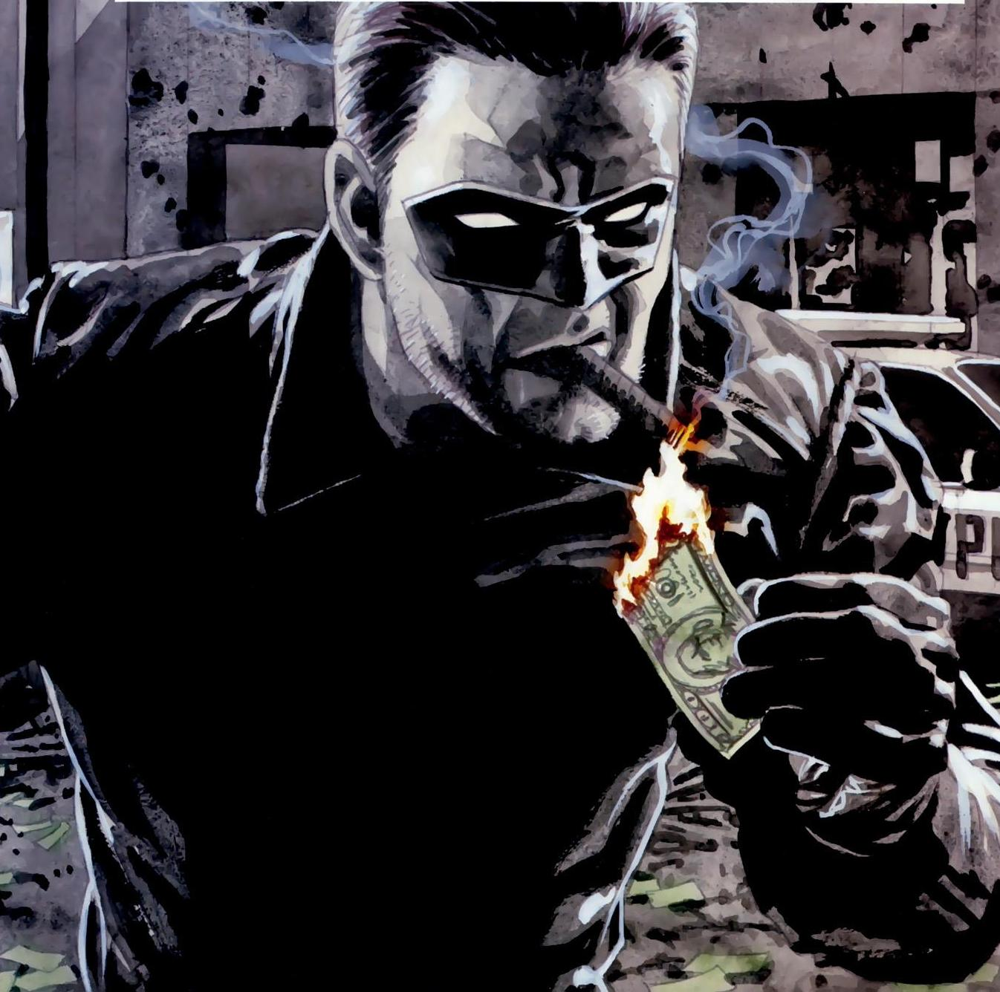

It all started in the year 1991. Dr. Scott was a renowned scientist is Denver.He was a loving husband and a caring dad. He himself, his wife ,two daughters and his pet Llama made a happy family. His thesis and research papers recieved many awards. It was a source of knowledge for scientist working on that field. He was in his early 40's and was working on many projects at that time. But he was more interested in his project which was related to the cerebral cortex of the animals. He always thought that animals are equally intelligent and intellectual. Just because their mode of language, lifestyle and habits are different from humans doesnt make them less intelligent. They may take more time to get trained and educated but they can learn things. That's the reason he was developing a serum in his lab which when injected to the animals can increase their size of cerebrum and accelerate their learning power. If he could develop this serum, he could create a revolution in the field of science and animal research. Dr. Scott had a patner scientist in his lab Dr. Jack,who never wanted this research to be flourished. He never wanted Dr. Scott to grow in his life. He despised Dr. Scott's happy personal and professional life. He had a plan to destrot everything Dr. Scott had. One day when Dr. Scott and his family were going out in a car , he got a shocking news that his lab caught fire. As soon as heard this, he rushed towards the lab, breaking all trafic lights. He had neither time nor words to explain that what happened, to his family. When he reached their, he straight away ran towards his chamber to fetch all his serum tubes. He found that all the tubes were burnt except one. Those tubes were so delicate that it could not be transported easily. Thats the reason he injected that serum in his Llama, so that afterwards he could take that serum samples from his blood. A few minutes later, there was serious blast in the lab. The blast was so heavy that some people inside and near by the lab were spot dead. Dr. Scott's family sitting in the car died in that blast.There was a stampede. In that stampede Dr. Scott lost his Llama, his research, which took years for him to develop was gone. In extreme depression and anxiety he shot himself. Llama lost in the nearby jungle. The same jungle where the Llama-Avatar was first seen. The serum worked on him. It took 5 years to learn and train himself. Now he is in search of the killer who killed his owner, his family.
Tom Fisher. A theif and a muderer who was sentenced life-time imprisonment. He escaped and joined Dr. Jack for seeking revenge. Serum gave him immense power. He has a power of lightening. He can produce 100 million volts energy in 3 seconds, which is enough to kill a crowd of 100 people within seconds.
Aston Jobs. Former wrestler, who took a large amount of loan from his boss but couldn't repay. As a result he was beaten severly, he almost died when Dr. Jack found him and injected Serum. His Power. He is hard as Titanium. His one blow and shake the mountains. In short, he is deadly and extremely dangerous.
Bobby Suberi. Former Magician. He had a lot of criminal charges for luring people and stealing valuables from them. When he had nothing for his livelihood, he joined Dr. Jack , where he for his own benefit injected serum in Bobby.As a result, he got the power of Hypnotizing people. He is the most valuable assest for Dr. Jack.